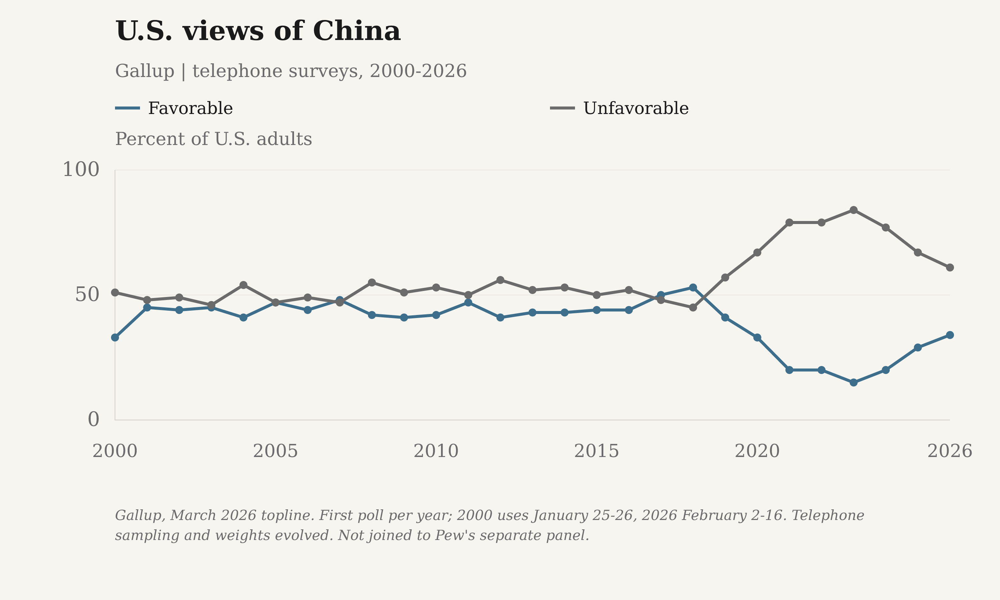
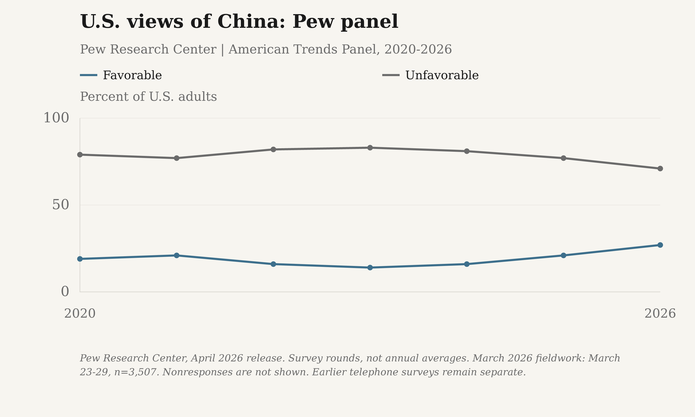
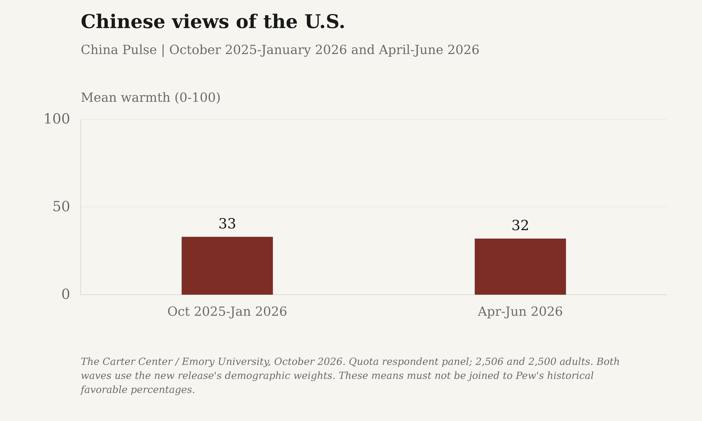
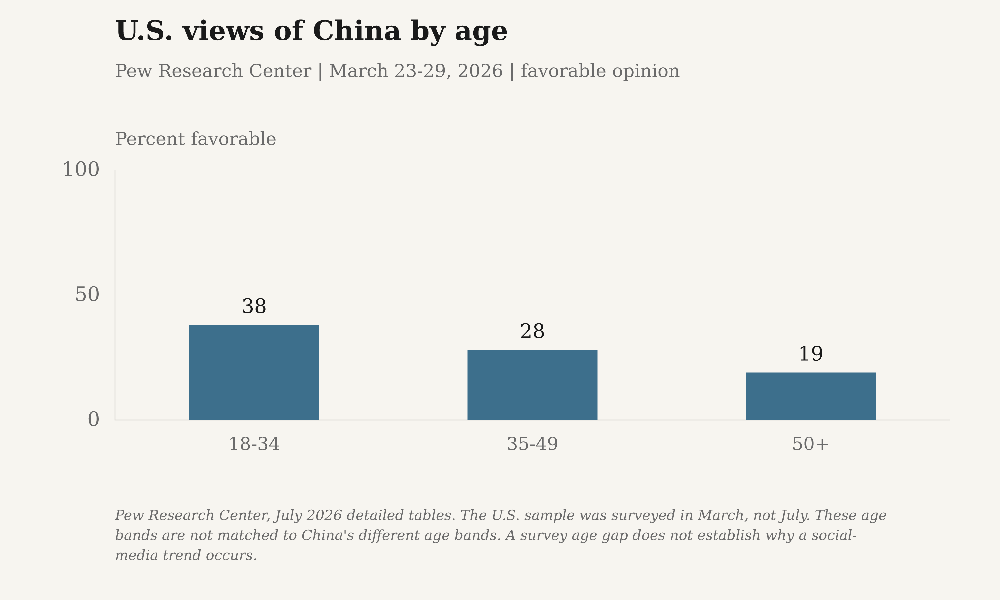
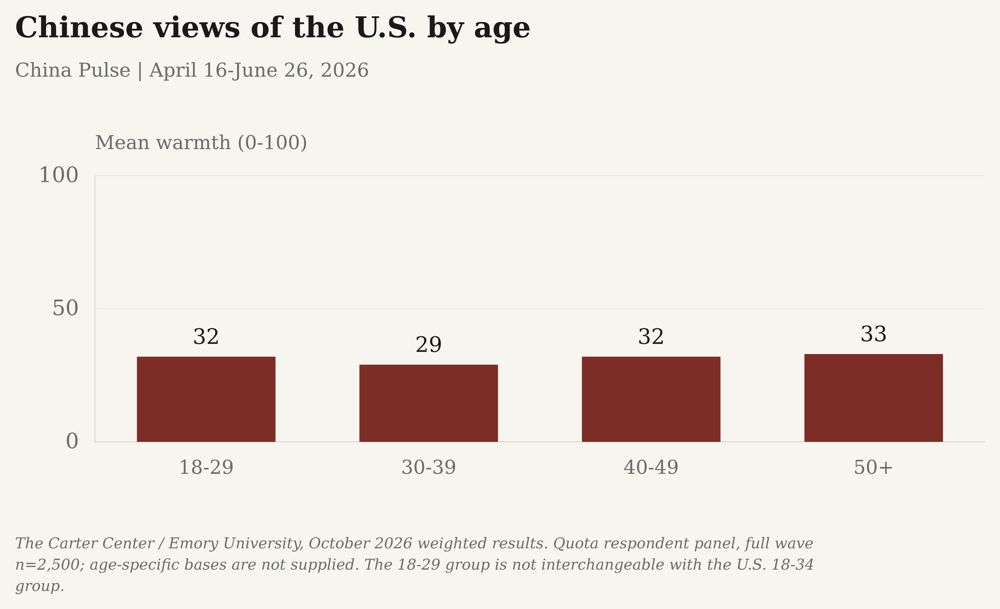
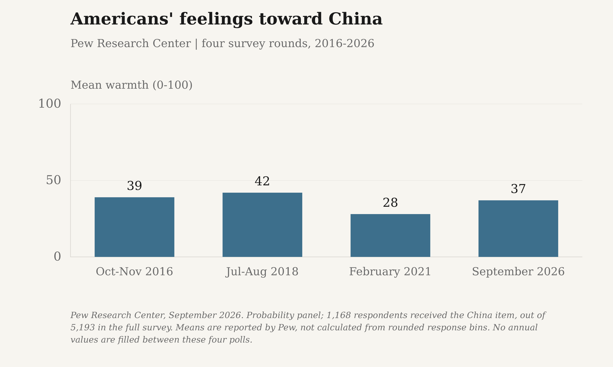
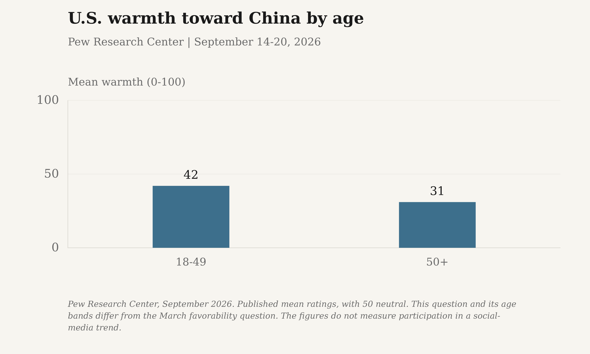
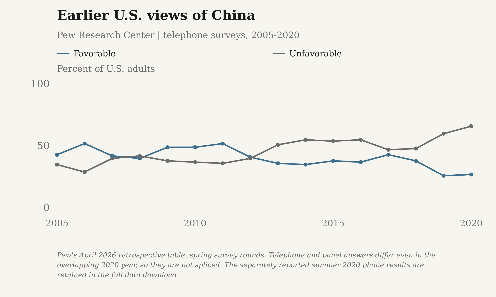
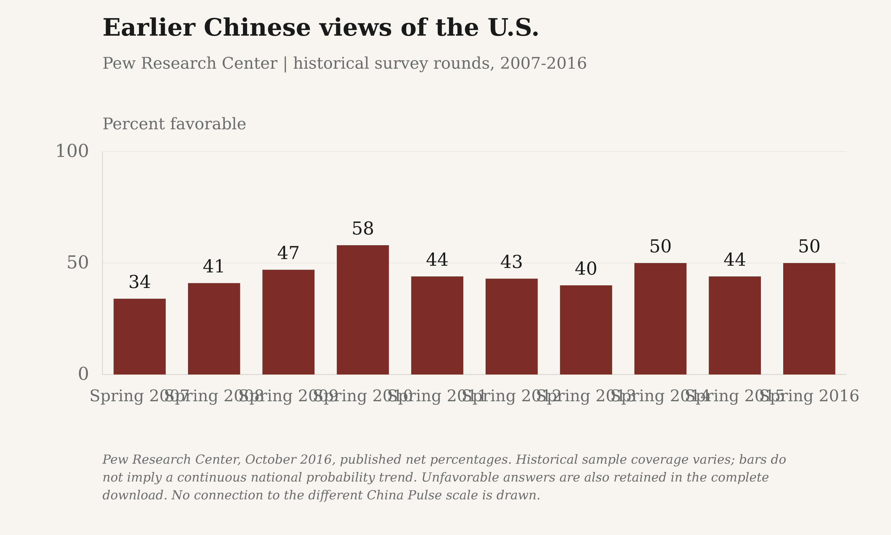

U.S. views of China

The first reported poll in each year, not annual averages. Every survey round is retained in the complete downloads.
Reported values and survey dates
| Group | Survey round | Value | Measure | Fieldwork |
|---|---|---|---|---|
| Favorable | Jan 25-26, 2000 | 33 | Percent of U.S. adults | 2000-01-25 to 2000-01-26 |
| Favorable | Feb 1-4, 2001 | 45 | Percent of U.S. adults | 2001-02-01 to 2001-02-04 |
| Favorable | Feb 4-6, 2002 | 44 | Percent of U.S. adults | 2002-02-04 to 2002-02-06 |
| Favorable | Feb 3-6, 2003 | 45 | Percent of U.S. adults | 2003-02-03 to 2003-02-06 |
| Favorable | Feb 9-12, 2004 | 41 | Percent of U.S. adults | 2004-02-09 to 2004-02-12 |
| Favorable | Feb 7-10, 2005 | 47 | Percent of U.S. adults | 2005-02-07 to 2005-02-10 |
| Favorable | Feb 6-9, 2006 | 44 | Percent of U.S. adults | 2006-02-06 to 2006-02-09 |
| Favorable | Feb 1-4, 2007 | 48 | Percent of U.S. adults | 2007-02-01 to 2007-02-04 |
| Favorable | Feb 11-14, 2008 | 42 | Percent of U.S. adults | 2008-02-11 to 2008-02-14 |
| Favorable | Feb 9-12, 2009 | 41 | Percent of U.S. adults | 2009-02-09 to 2009-02-12 |
| Favorable | Feb 1-3, 2010 | 42 | Percent of U.S. adults | 2010-02-01 to 2010-02-03 |
| Favorable | Feb 2-5, 2011 | 47 | Percent of U.S. adults | 2011-02-02 to 2011-02-05 |
| Favorable | Feb 2-5, 2012 | 41 | Percent of U.S. adults | 2012-02-02 to 2012-02-05 |
| Favorable | Feb 7-10, 2013 | 43 | Percent of U.S. adults | 2013-02-07 to 2013-02-10 |
| Favorable | Feb 6-9, 2014 | 43 | Percent of U.S. adults | 2014-02-06 to 2014-02-09 |
| Favorable | Feb 8-11, 2015 | 44 | Percent of U.S. adults | 2015-02-08 to 2015-02-11 |
| Favorable | Feb 3-7, 2016 | 44 | Percent of U.S. adults | 2016-02-03 to 2016-02-07 |
| Favorable | Feb 1-5, 2017 | 50 | Percent of U.S. adults | 2017-02-01 to 2017-02-05 |
| Favorable | Feb 1-10, 2018 | 53 | Percent of U.S. adults | 2018-02-01 to 2018-02-10 |
| Favorable | Feb 1-10, 2019 | 41 | Percent of U.S. adults | 2019-02-01 to 2019-02-10 |
| Favorable | Feb 3-16, 2020 | 33 | Percent of U.S. adults | 2020-02-03 to 2020-02-16 |
| Favorable | Feb 3-18, 2021 | 20 | Percent of U.S. adults | 2021-02-03 to 2021-02-18 |
| Favorable | Feb 1-17, 2022 | 20 | Percent of U.S. adults | 2022-02-01 to 2022-02-17 |
| Favorable | Feb 1-23, 2023 | 15 | Percent of U.S. adults | 2023-02-01 to 2023-02-23 |
| Favorable | Feb 1-20, 2024 | 20 | Percent of U.S. adults | 2024-02-01 to 2024-02-20 |
| Favorable | Feb 3-16, 2025 | 29 | Percent of U.S. adults | 2025-02-03 to 2025-02-16 |
| Favorable | Feb 2-16, 2026 | 34 | Percent of U.S. adults | 2026-02-02 to 2026-02-16 |
| Unfavorable | Jan 25-26, 2000 | 51 | Percent of U.S. adults | 2000-01-25 to 2000-01-26 |
| Unfavorable | Feb 1-4, 2001 | 48 | Percent of U.S. adults | 2001-02-01 to 2001-02-04 |
| Unfavorable | Feb 4-6, 2002 | 49 | Percent of U.S. adults | 2002-02-04 to 2002-02-06 |
| Unfavorable | Feb 3-6, 2003 | 46 | Percent of U.S. adults | 2003-02-03 to 2003-02-06 |
| Unfavorable | Feb 9-12, 2004 | 54 | Percent of U.S. adults | 2004-02-09 to 2004-02-12 |
| Unfavorable | Feb 7-10, 2005 | 47 | Percent of U.S. adults | 2005-02-07 to 2005-02-10 |
| Unfavorable | Feb 6-9, 2006 | 49 | Percent of U.S. adults | 2006-02-06 to 2006-02-09 |
| Unfavorable | Feb 1-4, 2007 | 47 | Percent of U.S. adults | 2007-02-01 to 2007-02-04 |
| Unfavorable | Feb 11-14, 2008 | 55 | Percent of U.S. adults | 2008-02-11 to 2008-02-14 |
| Unfavorable | Feb 9-12, 2009 | 51 | Percent of U.S. adults | 2009-02-09 to 2009-02-12 |
| Unfavorable | Feb 1-3, 2010 | 53 | Percent of U.S. adults | 2010-02-01 to 2010-02-03 |
| Unfavorable | Feb 2-5, 2011 | 50 | Percent of U.S. adults | 2011-02-02 to 2011-02-05 |
| Unfavorable | Feb 2-5, 2012 | 56 | Percent of U.S. adults | 2012-02-02 to 2012-02-05 |
| Unfavorable | Feb 7-10, 2013 | 52 | Percent of U.S. adults | 2013-02-07 to 2013-02-10 |
| Unfavorable | Feb 6-9, 2014 | 53 | Percent of U.S. adults | 2014-02-06 to 2014-02-09 |
| Unfavorable | Feb 8-11, 2015 | 50 | Percent of U.S. adults | 2015-02-08 to 2015-02-11 |
| Unfavorable | Feb 3-7, 2016 | 52 | Percent of U.S. adults | 2016-02-03 to 2016-02-07 |
| Unfavorable | Feb 1-5, 2017 | 48 | Percent of U.S. adults | 2017-02-01 to 2017-02-05 |
| Unfavorable | Feb 1-10, 2018 | 45 | Percent of U.S. adults | 2018-02-01 to 2018-02-10 |
| Unfavorable | Feb 1-10, 2019 | 57 | Percent of U.S. adults | 2019-02-01 to 2019-02-10 |
| Unfavorable | Feb 3-16, 2020 | 67 | Percent of U.S. adults | 2020-02-03 to 2020-02-16 |
| Unfavorable | Feb 3-18, 2021 | 79 | Percent of U.S. adults | 2021-02-03 to 2021-02-18 |
| Unfavorable | Feb 1-17, 2022 | 79 | Percent of U.S. adults | 2022-02-01 to 2022-02-17 |
| Unfavorable | Feb 1-23, 2023 | 84 | Percent of U.S. adults | 2023-02-01 to 2023-02-23 |
| Unfavorable | Feb 1-20, 2024 | 77 | Percent of U.S. adults | 2024-02-01 to 2024-02-20 |
| Unfavorable | Feb 3-16, 2025 | 67 | Percent of U.S. adults | 2025-02-03 to 2025-02-16 |
| Unfavorable | Feb 2-16, 2026 | 61 | Percent of U.S. adults | 2026-02-02 to 2026-02-16 |
Sources and survey methods
Gallup, March 2026 topline. First poll per year; 2000 uses January 25-26, 2026 February 2-16. Telephone sampling and weights evolved. Not joined to Pew's separate panel.
- Gallup: Telephone surveys of U.S. adults, not Pew's panel. Sampling frames and weights evolved. 2026 fieldwork February 2-16; full sample 1,001, each country item approximately 800. Published net percentages are retained despite rounding; every reported 2000 round is kept.
Download data and graphics
Complete data and definitions (JSON) · All observations (CSV) · Plotted values (CSV)
Download reported values as a high-resolution PNG or editable SVG:
- The Margin of Error: PNG (3000 × 1800) · SVG
- Substack: PNG (3000 × 1800) · SVG


U.S. views of China: Pew panel

The question asks about China overall, not separately about its people or government.
Reported values and survey dates
| Group | Survey round | Value | Measure | Fieldwork |
|---|---|---|---|---|
| Favorable | March 2020 | 19 | Percent of U.S. adults | Not supplied in the retrospective table |
| Favorable | Spring 2021 | 21 | Percent of U.S. adults | Not supplied in the retrospective table |
| Favorable | Spring 2022 | 16 | Percent of U.S. adults | Not supplied in the retrospective table |
| Favorable | Spring 2023 | 14 | Percent of U.S. adults | Not supplied in the retrospective table |
| Favorable | Spring 2024 | 16 | Percent of U.S. adults | Not supplied in the retrospective table |
| Favorable | Spring 2025 | 21 | Percent of U.S. adults | Not supplied in the retrospective table |
| Favorable | Spring 2026 | 27 | Percent of U.S. adults | 2026-03-23 to 2026-03-29 |
| Unfavorable | March 2020 | 79 | Percent of U.S. adults | Not supplied in the retrospective table |
| Unfavorable | Spring 2021 | 77 | Percent of U.S. adults | Not supplied in the retrospective table |
| Unfavorable | Spring 2022 | 82 | Percent of U.S. adults | Not supplied in the retrospective table |
| Unfavorable | Spring 2023 | 83 | Percent of U.S. adults | Not supplied in the retrospective table |
| Unfavorable | Spring 2024 | 81 | Percent of U.S. adults | Not supplied in the retrospective table |
| Unfavorable | Spring 2025 | 77 | Percent of U.S. adults | Not supplied in the retrospective table |
| Unfavorable | Spring 2026 | 71 | Percent of U.S. adults | 2026-03-23 to 2026-03-29 |
Sources and survey methods
Pew Research Center, April 2026 release. Survey rounds, not annual averages. March 2026 fieldwork: March 23-29, n=3,507. Nonresponses are not shown. Earlier telephone surveys remain separate.
- Pew Research Center: Chart dates such as March 1 are positioning dates, not verified fieldwork. Unknown historical field dates stay null. Phone and probability-panel histories are separate.
Download data and graphics
Complete data and definitions (JSON) · All observations (CSV) · Plotted values (CSV)
Download reported values as a high-resolution PNG or editable SVG:
- The Margin of Error: PNG (3000 × 1800) · SVG
- Substack: PNG (3000 × 1800) · SVG


Chinese views of the U.S.

Zero is cold, 50 is neutral and 100 is warm. These scores are not percentages.
Reported values and survey dates
| Group | Survey round | Value | Measure | Fieldwork |
|---|---|---|---|---|
| Oct 2025-Jan 2026 | Oct 2025-Jan 2026 | 33 | Mean warmth (0-100) | 2025-10-27 to 2026-01-01 |
| Apr-Jun 2026 | Apr-Jun 2026 | 32 | Mean warmth (0-100) | 2026-04-16 to 2026-06-26 |
Sources and survey methods
The Carter Center / Emory University, October 2026. Quota respondent panel; 2,506 and 2,500 adults. Both waves use the new release's demographic weights. These means must not be joined to Pew's historical favorable percentages.
- The Carter Center / Emory University, China Pulse: October 2026 release; exact publication day is not supplied in the PDF. Both waves use the October release's raking weights. The reweighted 2025 mean is 33, not the earlier release's 34. Quota panel, not documented as a national probability sample; not Pew.
Download data and graphics
Complete data and definitions (JSON) · All observations (CSV) · Plotted values (CSV)
Download reported values as a high-resolution PNG or editable SVG:
- The Margin of Error: PNG (3000 × 1800) · SVG
- Substack: PNG (3000 × 1800) · SVG


U.S. views of China by age

The published bands are ages 18-34, 35-49 and 50+. The youngest band includes 34-year-olds.
Reported values and survey dates
| Group | Survey round | Value | Measure | Fieldwork |
|---|---|---|---|---|
| 18-34 | Spring 2026 | 38 | Percent favorable | 2026-03-23 to 2026-03-29 |
| 35-49 | Spring 2026 | 28 | Percent favorable | 2026-03-23 to 2026-03-29 |
| 50+ | Spring 2026 | 19 | Percent favorable | 2026-03-23 to 2026-03-29 |
Sources and survey methods
Pew Research Center, July 2026 detailed tables. The U.S. sample was surveyed in March, not July. These age bands are not matched to China's different age bands. A survey age gap does not establish why a social-media trend occurs.
- Pew Research Center: This is the same March 23-29 U.S. survey as the April trend release, not another survey in July.
Download data and graphics
Complete data and definitions (JSON) · All observations (CSV) · Plotted values (CSV)
Download reported values as a high-resolution PNG or editable SVG:
- The Margin of Error: PNG (3000 × 1800) · SVG
- Substack: PNG (3000 × 1800) · SVG


Chinese views of the U.S. by age

Original Chinese survey age bands; 50 is a neutral rating, not 50% favorable.
Reported values and survey dates
| Group | Survey round | Value | Measure | Fieldwork |
|---|---|---|---|---|
| 18-29 | Apr-Jun 2026 | 32 | Mean warmth (0-100) | 2026-04-16 to 2026-06-26 |
| 30-39 | Apr-Jun 2026 | 29 | Mean warmth (0-100) | 2026-04-16 to 2026-06-26 |
| 40-49 | Apr-Jun 2026 | 32 | Mean warmth (0-100) | 2026-04-16 to 2026-06-26 |
| 50+ | Apr-Jun 2026 | 33 | Mean warmth (0-100) | 2026-04-16 to 2026-06-26 |
Sources and survey methods
The Carter Center / Emory University, October 2026 weighted results. Quota respondent panel, full wave n=2,500; age-specific bases are not supplied. The 18-29 group is not interchangeable with the U.S. 18-34 group.
- The Carter Center / Emory University, China Pulse: October 2026 release; exact publication day is not supplied in the PDF. Both waves use the October release's raking weights. The reweighted 2025 mean is 33, not the earlier release's 34. Quota panel, not documented as a national probability sample; not Pew.
Download data and graphics
Complete data and definitions (JSON) · All observations (CSV) · Plotted values (CSV)
Download reported values as a high-resolution PNG or editable SVG:
- The Margin of Error: PNG (3000 × 1800) · SVG
- Substack: PNG (3000 × 1800) · SVG


Americans' feelings toward China

Published mean ratings. The latest survey was conducted September 14-20, 2026.
Reported values and survey dates
| Group | Survey round | Value | Measure | Fieldwork |
|---|---|---|---|---|
| Oct-Nov 2016 | Oct-Nov 2016 | 39 | Mean warmth (0-100) | 2016-10-25 to 2016-11-08 |
| Jul-Aug 2018 | Jul-Aug 2018 | 42 | Mean warmth (0-100) | 2018-07-30 to 2018-08-12 |
| February 2021 | February 2021 | 28 | Mean warmth (0-100) | 2021-02-01 to 2021-02-07 |
| September 2026 | September 2026 | 37 | Mean warmth (0-100) | 2026-09-14 to 2026-09-20 |
Sources and survey methods
Pew Research Center, September 2026. Probability panel; 1,168 respondents received the China item, out of 5,193 in the full survey. Means are reported by Pew, not calculated from rounded response bins. No annual values are filled between these four polls.
- Pew Research Center: Mean ratings transcribed from the publisher's public article and embedded data table, checked through the public web source viewer on October 24, 2026. Direct article retrieval returned HTTP 403. The separately retrieved topline PDF verifies the question, field periods and 2026 China-item sample size; it does not contain these means. These are published means, not means reconstructed from rounded response categories.
Download data and graphics
Complete data and definitions (JSON) · All observations (CSV) · Plotted values (CSV)
Download reported values as a high-resolution PNG or editable SVG:
- The Margin of Error: PNG (3000 × 1800) · SVG
- Substack: PNG (3000 × 1800) · SVG


U.S. warmth toward China by age

The newer warmth question reports ages 18-49 and 50+, not the earlier 18-34 bands.
Reported values and survey dates
| Group | Survey round | Value | Measure | Fieldwork |
|---|---|---|---|---|
| 18-49 | September 2026 | 42 | Mean warmth (0-100) | 2026-09-14 to 2026-09-20 |
| 50+ | September 2026 | 31 | Mean warmth (0-100) | 2026-09-14 to 2026-09-20 |
Sources and survey methods
Pew Research Center, September 2026. Published mean ratings, with 50 neutral. This question and its age bands differ from the March favorability question. The figures do not measure participation in a social-media trend.
- Pew Research Center: Mean ratings transcribed from the publisher's public article and embedded data table, checked through the public web source viewer on October 24, 2026. Direct article retrieval returned HTTP 403. The separately retrieved topline PDF verifies the question, field periods and 2026 China-item sample size; it does not contain these means. These are published means, not means reconstructed from rounded response categories.
Download data and graphics
Complete data and definitions (JSON) · All observations (CSV) · Plotted values (CSV)
Download reported values as a high-resolution PNG or editable SVG:
- The Margin of Error: PNG (3000 × 1800) · SVG
- Substack: PNG (3000 × 1800) · SVG


Earlier U.S. views of China

Earlier telephone surveys are shown separately from the American Trends Panel.
Reported values and survey dates
| Group | Survey round | Value | Measure | Fieldwork |
|---|---|---|---|---|
| Favorable | Spring 2005 | 43 | Percent of U.S. adults | Not supplied in the retrospective table |
| Favorable | Spring 2006 | 52 | Percent of U.S. adults | Not supplied in the retrospective table |
| Favorable | Spring 2007 | 42 | Percent of U.S. adults | Not supplied in the retrospective table |
| Favorable | Spring 2008 | 40 | Percent of U.S. adults | Not supplied in the retrospective table |
| Favorable | Spring 2009 | 49 | Percent of U.S. adults | Not supplied in the retrospective table |
| Favorable | Spring 2010 | 49 | Percent of U.S. adults | Not supplied in the retrospective table |
| Favorable | Spring 2011 | 52 | Percent of U.S. adults | Not supplied in the retrospective table |
| Favorable | Spring 2012 | 41 | Percent of U.S. adults | Not supplied in the retrospective table |
| Favorable | Spring 2013 | 36 | Percent of U.S. adults | Not supplied in the retrospective table |
| Favorable | Spring 2014 | 35 | Percent of U.S. adults | Not supplied in the retrospective table |
| Favorable | Spring 2015 | 38 | Percent of U.S. adults | Not supplied in the retrospective table |
| Favorable | Spring 2016 | 37 | Percent of U.S. adults | Not supplied in the retrospective table |
| Favorable | Spring 2017 | 43 | Percent of U.S. adults | Not supplied in the retrospective table |
| Favorable | Spring 2018 | 38 | Percent of U.S. adults | Not supplied in the retrospective table |
| Favorable | Spring 2019 | 26 | Percent of U.S. adults | Not supplied in the retrospective table |
| Favorable | Spring 2020 | 27 | Percent of U.S. adults | Not supplied in the retrospective table |
| Unfavorable | Spring 2005 | 35 | Percent of U.S. adults | Not supplied in the retrospective table |
| Unfavorable | Spring 2006 | 29 | Percent of U.S. adults | Not supplied in the retrospective table |
| Unfavorable | Spring 2007 | 40 | Percent of U.S. adults | Not supplied in the retrospective table |
| Unfavorable | Spring 2008 | 42 | Percent of U.S. adults | Not supplied in the retrospective table |
| Unfavorable | Spring 2009 | 38 | Percent of U.S. adults | Not supplied in the retrospective table |
| Unfavorable | Spring 2010 | 37 | Percent of U.S. adults | Not supplied in the retrospective table |
| Unfavorable | Spring 2011 | 36 | Percent of U.S. adults | Not supplied in the retrospective table |
| Unfavorable | Spring 2012 | 40 | Percent of U.S. adults | Not supplied in the retrospective table |
| Unfavorable | Spring 2013 | 51 | Percent of U.S. adults | Not supplied in the retrospective table |
| Unfavorable | Spring 2014 | 55 | Percent of U.S. adults | Not supplied in the retrospective table |
| Unfavorable | Spring 2015 | 54 | Percent of U.S. adults | Not supplied in the retrospective table |
| Unfavorable | Spring 2016 | 55 | Percent of U.S. adults | Not supplied in the retrospective table |
| Unfavorable | Spring 2017 | 47 | Percent of U.S. adults | Not supplied in the retrospective table |
| Unfavorable | Spring 2018 | 48 | Percent of U.S. adults | Not supplied in the retrospective table |
| Unfavorable | Spring 2019 | 60 | Percent of U.S. adults | Not supplied in the retrospective table |
| Unfavorable | Spring 2020 | 66 | Percent of U.S. adults | Not supplied in the retrospective table |
Sources and survey methods
Pew's April 2026 retrospective table, spring survey rounds. Telephone and panel answers differ even in the overlapping 2020 year, so they are not spliced. The separately reported summer 2020 phone results are retained in the full data download.
- Pew Research Center: Chart dates such as March 1 are positioning dates, not verified fieldwork. Unknown historical field dates stay null. Phone and probability-panel histories are separate.
Download data and graphics
Complete data and definitions (JSON) · All observations (CSV) · Plotted values (CSV)
Download reported values as a high-resolution PNG or editable SVG:
- The Margin of Error: PNG (3000 × 1800) · SVG
- Substack: PNG (3000 × 1800) · SVG


Earlier Chinese views of the U.S.

Historical Pew favorable opinions. These are not current readings or warmth scores.
Reported values and survey dates
| Group | Survey round | Value | Measure | Fieldwork |
|---|---|---|---|---|
| Spring 2007 | Spring 2007 | 34 | Percent favorable | Not supplied in the retrospective table |
| Spring 2008 | Spring 2008 | 41 | Percent favorable | Not supplied in the retrospective table |
| Spring 2009 | Spring 2009 | 47 | Percent favorable | Not supplied in the retrospective table |
| Spring 2010 | Spring 2010 | 58 | Percent favorable | Not supplied in the retrospective table |
| Spring 2011 | Spring 2011 | 44 | Percent favorable | Not supplied in the retrospective table |
| Spring 2012 | Spring 2012 | 43 | Percent favorable | Not supplied in the retrospective table |
| Spring 2013 | Spring 2013 | 40 | Percent favorable | Not supplied in the retrospective table |
| Spring 2014 | Spring 2014 | 50 | Percent favorable | Not supplied in the retrospective table |
| Spring 2015 | Spring 2015 | 44 | Percent favorable | Not supplied in the retrospective table |
| Spring 2016 | Spring 2016 | 50 | Percent favorable | 2016-04-06 to 2016-05-08 |
Sources and survey methods
Pew Research Center, October 2016, published net percentages. Historical sample coverage varies; bars do not imply a continuous national probability trend. Unfavorable answers are also retained in the complete download. No connection to the different China Pulse scale is drawn.
- Pew Research Center: Nets are read directly, not summed from separately rounded response components. Earlier survey coverage varies; no line is drawn across these samples or to the different 2025-2026 China Pulse measure.
Download data and graphics
Complete data and definitions (JSON) · All observations (CSV) · Plotted values (CSV)
Download reported values as a high-resolution PNG or editable SVG:
- The Margin of Error: PNG (3000 × 1800) · SVG
- Substack: PNG (3000 × 1800) · SVG